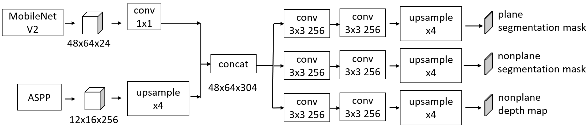

Background
PlaneNet (C. Liu, J. Yang et al., CVPR, 2018) is a successful tool for 3D Reconstruction from monocular images, especially for indoor scenarios. However, it is commonly agreed that deep neural network is computational expensive. Here we want to compress PlaneNet for pratical industrial usage.
Learn more about PlaneNet: http://art-programmer.github.io/planenet.html
Method
We almost changed all components in the PlaneNet including backbone, pyramid pooling and implementation of convolution.
Original network structure from (C. Liu, J. Yang et al., CVPR, 2018):

Our strucure:

Decoder:
Result
For indoor scenario, most objects are artifical. There are always planes in artifical objects like desk, wall and screen. As a result, here we will focusing on the accuracy of depth estimation of plane areas.

As we can learn from the table, the accuracy of depth estimation drops a little while computation cost is largely reduced.

Our work even out-performanced PlaneNet in some cases as showed above.